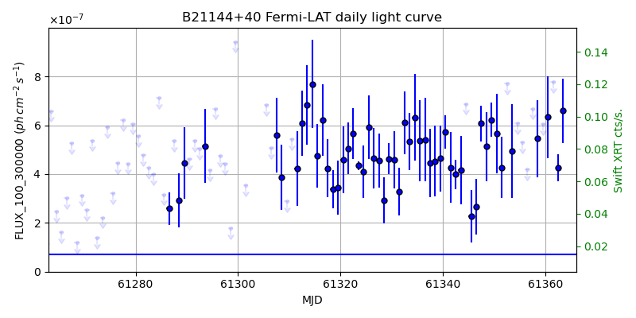
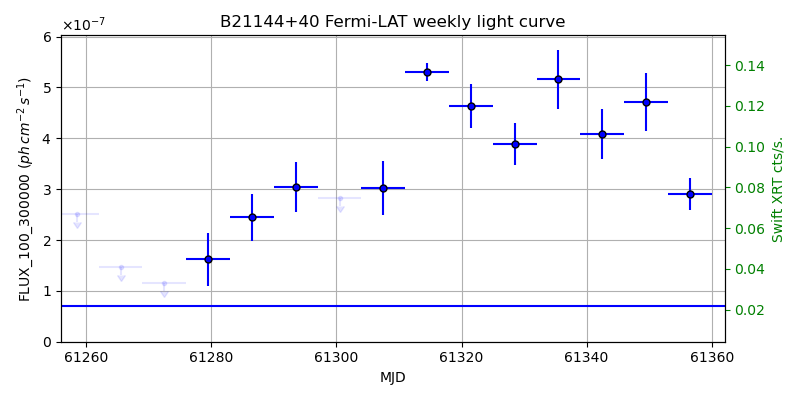

LAT Lightcurve site: https://fermi.gsfc.nasa.gov/ssc/data/access/lat/msl_lc/source/B2_1144p40
Swift site: https://www.swift.psu.edu/monitoring/source.php?source=B21144+40
NED: Query
Time of last update of this page: UT: 2026-11-28 16:23 (MJD: 61372.683)
| Property | Value |
|---|---|
| R.A. | 11:46:58.32 |
| Dec. | 39:58:33.6 |
| z | 1.088 |
| 3FGL SpectrumType | PowerLaw |
| 3FGL PL Index | 2.32 |
| 3FGL Flux_100_300000 | 7.00e-08 1 / (s cm2) |
| 3FGL Flux_1000_300000 | 3.34e-09 1 / (s cm2) |
| 3FGL Flux >200 GeV | 3.05e-12 1 / (s cm2) |
| 3FGL Extrap. Crab >200 GeV | 0.01 |
| 3FGL Flux After EBL Absorption >200GeV | 3.00e-14 1 / (s cm2) |
| 3FGL EBL Crab Fraction >200GeV | 0.00 |

| MJD | dMJD | Flux | dFlux | Frac3FGL | FracCrab>200GeV | EBLFracCrab>200GeV |
|---|---|---|---|---|---|---|
| 61367.50 | 0.50 | 6.22e-07 | 1.15e-07 | 8.89 | 0.12 | 0.00 |
| 61368.50 | 0.50 | 6.02e-07 | 5.17e-08 | 8.60 | 0.11 | 0.00 |
| 61369.50 | 0.50 | 3.85e-07 | 1.01e-07 | 5.50 | 0.07 | 0.00 |
| 61370.50 | 0.50 | 4.52e-07 | 1.05e-07 | 6.46 | 0.08 | 0.00 |
| 61371.50 | 0.50 | 6.09e-07 | 7.56e-08 | 8.70 | 0.11 | 0.00 |

| MJD | dMJD | Flux | dFlux | Frac3FGL | FracCrab>200GeV | EBLFracCrab>200GeV |
|---|---|---|---|---|---|---|
| 61335.50 | 3.50 | 5.16e-07 | 5.78e-08 | 7.38 | 0.10 | 0.00 |
| 61342.50 | 3.50 | 4.08e-07 | 4.96e-08 | 5.83 | 0.08 | 0.00 |
| 61349.50 | 3.50 | 4.71e-07 | 5.76e-08 | 6.74 | 0.09 | 0.00 |
| 61356.50 | 3.50 | 2.90e-07 | 3.20e-08 | 4.15 | 0.05 | 0.00 |
| 61363.50 | 3.50 | 4.82e-07 | 3.33e-08 | 6.90 | 0.09 | 0.00 |
| MJD | dMJD | Flux | dFlux | Frac3FGL | FracCrab>200GeV | EBLFracCrab>200GeV |
|---|---|---|---|---|---|---|
| 61367.50 | 0.50 | 3.58e-08 | 1.43e-08 | 10.75 | 0.14 | 0.00 |
| 61368.50 | 0.50 | 3.05e-08 | 1.36e-08 | 9.15 | 0.12 | 0.00 |
| 61369.50 | 0.50 | 5.91e-08 | 0.00e+00 | 0.00 | 0.00 | 0.00 |
| 61370.50 | 0.50 | 2.99e-08 | 0.00e+00 | 0.00 | 0.00 | 0.00 |
| 61371.50 | 0.50 | 4.93e-08 | 0.00e+00 | 0.00 | 0.00 | 0.00 |

| MJD | dMJD | Flux | dFlux | Frac3FGL | FracCrab>200GeV | EBLFracCrab>200GeV |
|---|---|---|---|---|---|---|
| 61335.50 | 3.50 | 3.07e-08 | 6.36e-09 | 9.21 | 0.12 | 0.00 |
| 61342.50 | 3.50 | 2.41e-08 | 5.71e-09 | 7.22 | 0.09 | 0.00 |
| 61349.50 | 3.50 | 1.53e-08 | 5.02e-09 | 4.59 | 0.06 | 0.00 |
| 61356.50 | 3.50 | 1.19e-08 | 0.00e+00 | 0.00 | 0.00 | 0.00 |
| 61363.50 | 3.50 | 1.74e-08 | 4.10e-09 | 5.21 | 0.07 | 0.00 |
--------------------------------------------------------- Using user-supplied coords: 11:46:58.32 39:58:33.6 2000 --------------------------------------------------------- FLWO UT night of: 2026-11-29 Local Sid. @ Midnight: 04:08 Sunset (-15.0) (local, UT): 18:31 01:31 Sunrise (-15.0) (local, UT): 05:53 12:53 Moonrise (local, UT): 21:57 04:57 Moonset (local, UT): Moon phase: 0.72 --------------------------------------------------------- AzTime LSID UT Obj_el Obj_az Mn_el Mn_az Sep. --------------------------------------------------------- 18:31 22:39 01:31 -16.7 346.2 -32.9 32.1 44.2 19:01 23:09 02:01 -17.9 352.1 -29.4 38.9 44.0 19:31 23:39 02:31 -18.5 358.2 -25.4 45.0 43.8 20:01 00:09 03:01 -18.3 4.3 -21.0 50.6 43.5 20:31 00:39 03:31 -17.5 10.3 -16.2 55.6 43.3 21:01 01:09 04:01 -16.1 16.1 -11.1 60.2 43.1 21:31 01:39 04:31 -14.0 21.7 -5.4 64.5 42.9 22:01 02:09 05:01 -11.3 27.0 0.4 68.5 42.7 22:31 02:39 05:31 -8.2 31.9 5.8 72.2 42.5 23:01 03:10 06:01 -3.3 36.4 11.6 75.8 42.4 23:31 03:40 06:31 -0.0 40.6 17.5 79.4 42.2 00:01 04:10 07:01 3.9 44.4 23.6 82.9 42.1 00:31 04:40 07:31 8.4 47.9 29.7 86.5 41.9 01:01 05:10 08:01 13.3 51.1 35.8 90.3 41.8 01:31 05:40 08:31 18.3 53.9 42.0 94.4 41.7 02:01 06:10 09:01 23.6 56.5 48.1 99.1 41.6 02:31 06:40 09:31 29.0 58.8 54.2 104.7 41.5 03:01 07:10 10:01 34.5 60.7 60.1 111.7 41.4 03:31 07:40 10:31 40.1 62.3 65.6 121.1 41.4 04:01 08:10 11:01 45.8 63.6 70.5 134.7 41.3 04:31 08:40 11:31 51.6 64.3 74.0 154.7 41.3 05:01 09:11 12:01 57.3 64.4 75.2 181.1 41.2 05:31 09:41 12:31 63.1 63.4 73.6 206.8 41.2 05:53 10:02 12:53 67.2 61.7 71.0 221.2 41.1 --------------------------------------------------------- Dark hours >55 deg.: 0.00